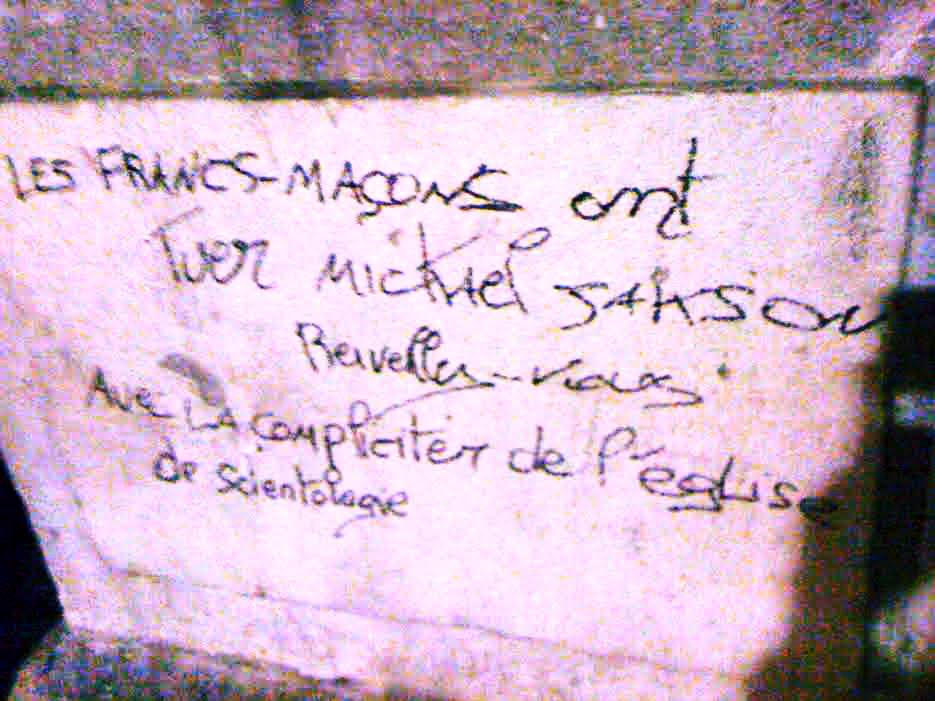
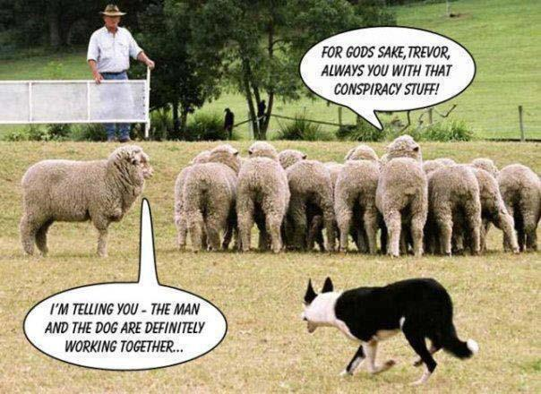
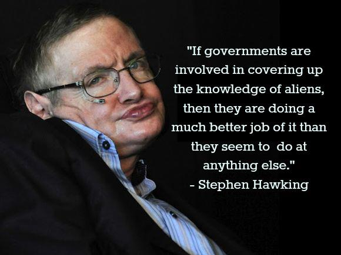

On ne peut pas faire confiance à quelqu'un qui ne fait confiance à personne Jerome Blattner
Mais le fait que l'on ait ri de génies n'implique pas que tous ceux dont on rit sont des génies. Ils
ont ri de Christophe Colomb, ils ont ri de Fulton, ils ont ri des frères Wright. Mais ils ont aussi ri de Bozo le
Clown Carl Sagan
C'est le sentiment d'être trompé qui est ici trompeurClément Rosset: Le
Réel et son double (Gallimard, 1976)
Le conspirationnisme/complotisme est la croyanceVoir une conspiration à l'oeuvre en
permanence dans la vie de tous les jours (les informations, les produits que l'on achète, les livres publiés, les films qui sortent,
etc.) interprétés comme ayant un rapport de près ou de loin avec la conspiration est un mécanisme comparable à celui de la croyance
religieuse, où tout événement de la vie est supposé être soumis à la volonté divine ominipotente - Stocking & Holstein, 2009
que le monde est régi par des conspirations/complots en permanence. L'idée de conspiration y devient la norme plutôt
que l'exception.
Comme toute croyance, il produit des raisonnements biaisés qui ne visent qu'à interpréter le
réel à travers elle : l'explication "raisonnable" est délaissée au profit d'une autre qui conforte la
croyance en un ennemi à l'oeuvre en permanence.
Dans les deux cas les faits sont les mêmes, ce qui semble rendre la réfutation difficile puisque le
débat ne repose plus que sur l'interprétation libre de ces faits. Dans ce cas l'explication la plus raisonnable est réputée être celle qui nécessite le moins de faits (principe de simplicité/banalité comme le rasoir
d'Ockham (par exemple si une tour s'effondre suite à être percutée par un avion, l'incendie provoqué suffit - même pour un véritable complot où les pilotes ne seraient pas à la solde de ceux qu'on accuse - et il n'y a pas besoin de rajouter des explosifs). Egalement une théorie n'intègrant jamais des éléments récurrents du réel tels que le hasard, les erreurs, maladresses,
incompétences ou stupidités, refusant les coïncidences fortuites, est typique d'un esprit complotiste ou tout est orchestré, manipulé..
L'anti-complotisme ne vise donc pas à contredire des théories de complot en elles-mêmes, mais la manière
déraisonnable dont elles sont construites.
Causes
A l'origine du conspirationisme se trouve :
une perte de confiance en les autorités/élites (celles qui sont censées nous protéger, nous
informer, nous guider, nous conseiller, etc.) qui, à force d'erreurs/mensonges/abus relayés par les media (effet
loupe), finissent par être systématiquement vues comme non-fiables, indignes de la confiance qu'on leur accordait
et donc supposées complotrices dans le but de leur profit (corruption) en permanence et par extension en complicité avec tous autres comploteurs pouvant y trouver aussi un intérêt. De fait, plusieurs études montrent que croire à une conspiration incite à croire à une autre : Goertzel, 1994, Swami, Chamorro-Premuzic, & Furnham, 2009.,
au détriment du reste de la population qui serait berné/exploité (populisme) Et ce même si elles sont supposées légitimes (puisque élues/désignées par le peuple-même qui se plaint d'elles).
une colère généralement provoquée par un sentiment d'injustice, qui parfois débouche sur une
haine systématique développée envers une catégorie de personnes (sur une base culturelle, religieuse, raciale,
sociale, politique, etc.)
Catalyseurs
Ces causes, qui peuvent exister à toute période, peuvent aussi être renforcées dans des
contextes de :
Crise : ce qu'on tolère en période normale devient intolérable lorsque l'on souffre trop
(socialement, financièrement). La crise financière, par exemple, renforce l'idée que ceux qui en bénéficient
l'ont forcément orchestrée.
Relativisme où un certain nombre d'idées (politiques,
économiques, scientifiques, religieuses, etc.) jusqu'alors admises via
l'argument d'autorité sont remises en cause. Il
devient dès lors plus facile de détourner l'atmosphère de relativisme en un "tout se vaut" où des idées
jusque-là jugées farfelues deviennent admissibles dans une posture d'ouverture et d'autorités
décrédibilisées L'Internet, en particulier, comme l'imprimerie à
son époque, l'Internet crée une "horizontalisation" de l'information (tout le monde a théoriquement a la même puissance de
publication) dans une société qui était auparavant plus hiérarchisée, et où des élites (scientifiques,
journalistiques, etc.) jouaient un rôle de filtre (à tort ou à raison, selon qu'il s'agisse de censure injustifiée ou
au contraire de vérifications et recoupement d'informations). Le revers de cette médaille "horizontale" est que l'accès
à des informations fausses ou trompeuses est aussi facilité..
Principes
Sélection
Au départ du raisonnement conspirationnisme se trouve un mécanisme de sélection du coupable, de
2 manières possibles :
logique / post hoc : en suivant le raisonnement simpliste à qui profite le
crime ? (Cui bono) on trouve toujours
quelqu'un qui a plus intérêt à ce qu'un événement se produise. Désigner quelqu'un d'autre (ayant moins
d'intérêt) semble illogique et invoquer le hasard semble moins probable Ce qui permet également toujours de désigner quelqu'un à qui profite telle ou telle théorie d'une conspiration.
Le conspirationniste en déduitLa déduction introduit ici un effet pervers : le cheminement logique n'inclut pas naturellement l'apparition du hasard, d'incompétences ou de maladresses, de sorte que l'on bâtit intuitivement un cheminement qui réussit sans difficulté ou impondérables, de manière assez irréaliste. D'un autre côté, l'énumération d'un tel chemin logique rend une théorie séduisante, puisque détaillée et précise, semblant sans faille (alors qu'elle a été conçue comme telle)
alors qu'il y a un coupable probable ou crédiblePas nécessairement le même pour tout le monde, même si des
ennemis différents sont souvent amalgamés pour finir quasiment indifférenciés,
comme juifs & francs-maçons typiquement.Par exemple, pour la mort d'un artiste célèbre mais en perte de vitesse, la logique "à qui profite le
crime" pourrait nous faire accuser sa maison de disque qui bénéficiera de la vente de coffrets posthumes, etc..
Ici la motivation peut être un besoin de :
effet
d'attribution Egalement appelé Erreur
fondamentale d'attribution, biais d'internalité ou biais de correspondance
rationalisation : considérer que l'incroyable est impossibleA l'image de rationalistes s'il (tel
événement est si exceptionnel qu'il ne peut être dû au hasard/la chance/malchance, l'incompétence, la
maladresse ou la bétise) amène à préférer des théories qui donnent du sens - mais paradoxalement
souvent un sens encore plus fou : Les théories de conspiration nous aident à gérer les événements en
leur donnant un sens. Les conspirations nous assurent que les choses terribles n'arrivent pas par
hasard. Les conspirations nous disent que quelqu'un est responsable, même involontairement ou
secrètement ou incompréhensiblement, et qu'il est donc possible de l'arrêter et le punir et en temps
voulu laisser tout le monde reprendre le contrôle sur sa vieShrira, Ilan:
"Paranoia,
9/11, and the roots of conspiracy theories", Psychology Today, 2008-09-11.
dé-responsabilisation : Les conspirations nous disent que nous ne sommes pas
responsables de nos problèmes ; ce n'est pas de notre faute, c'est la leur ! De cette manière, croire aux
conspirations remplit nombre des fonctions d'auto-protection comme le principe du bouc émissaireShrira, Ilan: "Paranoia,
9/11, and the roots of conspiracy theories", Psychology Today, 11 septembre 2008.
Par exemple, des américains préfereront croire que la tuerie à l'école de Sandy Hook a
été orchestrée pour imposer un contrôle des armes dans le pays, plutôt que d'assumer la
responsabilité d'un tel drame suite à la facilité d'accès aux armes aux USA. Ou encore, des musulmans préfèreront croire que le massacre
de Charlie n'a pas été fait par des mulsulmans fanatiques, comme une manière ultime de s'en dé-solidariser.
narcissisme

Jusqu'à la caricature, le conspirationniste est la figure de celui qui se veut plus éveillé que
les autres, sans être forcément plus instruit
Une personne dénonçant continuellement des conspirations se positionne implicitement comme plus
intelligente que celles qui se feraient avoir. Dans sa relation aux autres, le conspirationniste peut donc
se positionner à la fois comme supérieur, voire quelqu'un de quasi-héroïque, capable de sauver et aider
ceux qui sont considérés comme "non informés", "naïfs" ou incapables de reconnaître les conspirations
prétendues Dans certains cas, c'est en fait l'inverse qui se produit, le conspirationniste se faisant lui-même abuser en relayant des arguments pré-mâchés, instigués malentionnellement par des groupes de pressions Jacques, Dunlap, & Freeman, 2008McCright & Dunlap, 2003, 2010Mooney, 2007Oreskes & Conway, 2010Stocking & Holstein, 2009 (des émetteurs de CFC n'ont pas intérêt à ce que le public accepte l'idée que les CFC trouent la couche d'ozone, des émetteurs de CO2 que cela altère le climat, des cigarettiers que la cigarette provoque le cancer, etc.)Thomas Boghardt: "Operation INFEKTION - Soviet Bloc Intelligence and Its AIDS Disinformation Campaign", Studies
in Intelligence, vol. 53, n° 4, 2009-12.
En adoptant une position à "contre-courant" sur un sujet faisant la une de l'actualité, le
conspirationnisme bénéficie du coup de projecteur accordé à l'événement On voit en effet rarement émerger des théories de complots sur des événements intéressant peu de gens, et au contraire souvent apparaître de telles théories dès qu'un sujet devient populaire..
Ce peut alors être l'occasion de faire passer un message (idéologique, politique,
phobique, etc.) en le reliant à l'événement qui accapare un moment toute l'attention.
projection
Le complotiste, souvent déçu par la société voire le genre humain qu'il mésestime (suite à des expériences
personnelles ou une observation de l'actualité), suppose d'autant plus facilement une intention maligne chez
les autres. Il peut alors se projeter à la place des coupables qu'il a sélectionnés, en se disant à leur
place, je le feraisDouglas, Karen M. & Sutton, Robbie M.: "Does
it take one to know one? Endorsement of conspiracy theories is influenced by personal willingness to
conspire",
Université du Kent (Canterbury, UK), 2011

Le conspirationniste dépeint comme plus "malin" que les autres... à son profit ou celui du plus
grand nombre ? idéologique / ad hoc : guidé par son idéologie,
un conspirationniste connaît ses ennemis a prioriShermer, Michael: "Why
Do People Believe in Conspiracy Theories?", Scientific American, 2014-11-18. Il
peut alors, dans une dérive paranoïaque, développer une tendance à théoriser un lien systématique entre eux et
tout événement d'importance. Par exemple, des mouvements dit "anti-sionistes" verront une manoeuvre "sionniste"
derrière des phénomènes de société à priori non liés, tels que le divorce
Le Monde, 2009-04-28 < "Dieudonné
: 'le mariage pour tous est un projet sioniste'", Conspiracy Watch, 2009-04-30 ou le
mariage homosexuel
Le Monde, 2009-04-28 < "Yahia
Gouasmi : 'Derrière chaque divorce, il y a un sioniste'", Conspiracy Watch, 2009-04-30,
pour des raisons :
politiquesidéologies souvent :
haineuses (envers des catégories de population, sur des critères
racistes ou non)
populistes (rejet des "autorités" et élites qui seraient corrompues, injustes, ne pensant qu'à leur
propre profit et nous mentent). Par exemple une haine des autorités américaines pourra participer à l'idée
d'une conspiration du 11 septembre.
libérales Lewandowsky, Stephan & Oberauer, Klaus & Gignac, Gilles (École de Psychologie, Université de l'Australie Occidentale): "NASA
faked the moon landing—Therefore (Climate) Science is a Hoax: An Anatomy of the Motivated Rejection of
Science", Psychological Science, 2012 ou libertaires : deux extrêmes qui se rejoignent
dans le rejet perpétuel de toute idée de contrainte (même sociale ou écologique), impliquant que des
ennemis cherchent perpétuellement à les imposer à leur profit supposé et théorisé.
Défensif (plus une communauté est régulièrement critiquée/stigmatisée/attaquée, plus elle va penser que
ses opposants ne sont pas objectifs et qu'il s'agit donc d'une manoeuvre orchestrée à leur encontre
Par exemple suite à l'attentat contre
Charlie, certains musulmans parleront d'un complot visant à ternir l'image des musulmans..
phobiques
: Dans une sorte de principe de précaution poussé à l'extrême, une personne conspirationniste, même
si elle sait en son for intérieur que ce qu'elle dénonce n'est peut-être pas vrai, va préférer
toujours imaginer le pire (que ce soit vrai) dans l'espoir de prévenir le mal potentiel (le
dénoncer comme présent lui permet de sensibiliser à l'horreur de ce qui pourrait arriver). Au pire si ça
n'existe pas le conspirationniste dit donc entre les lignes : faites attention à ce que ça n'arrive pas
! parfois de manière paradoxale quand il s'agit de prévenir sa propre tendance à conspirer à l'occasion
Douglas & Sutton, 2011.
Interprétation
Au lieu de partir des faits pour induire une conclusion, la
conviction de l'existence de comploteurs implique que tout est
déduit à partir d'elle. Il s'ensuit que, puisqu'elle est supposée
vraie :
tous les faits ne peuvent que la confirmer. Et puisqu'ils la confirment, ils ne peuvent dûs au
hasard.
aucune démonstration n'est requise. Seule une réfutation éventuelle est attendue impossible puisqu'il ne s'agit que
d'une interprétation des faits. Elle peut au mieux être rendue moins crédible, ce qui laisse une impression de subjectivité. La réfutation est aussi intégrée à la théorie complotiste comme une action du comploteur lui-même, venant paradoxalement confirmer le complot..
, inversant ainsi la charge de la preuve.
Ce doute généralisé et systématique amène respectivement à penser que le
complot est global (tout est lié) et qu'un événement n'arrive pas par hasard (il n'y a pas de
fumée sans feu)
Cela amène alors à adopter une grille de lectureà charge des événements du
monde contre l'ennemi désigné. Le but - conscient ou inconscient - étant de l'accabler (démontrer ses méfaits
supposés, inciter à sa haine), un cheminement logique (déductif)
est établi entre des faits réels, observés, et le coupable sélectionné, au travers d'interprétations ad
hoc de ces faits :
des faits interprétés à charge
...qui sont interprétés en fonction de l'intérêt que pourrait y trouver l'ennemi sélectionné (par logique ou
idéologie)
Exemple de clip reprenant la rhétorique conspirationniste : tous les événements historiques y sont
interprétés comme reliés à la même conspiration globale, toute vérité est cachée (le vrai pouvoir est
secret, derrière chaque figure il y en a une autre qui manipule), et rien [aucune guerre] n'est un
hasard. des faits à décharge
...apparemment disculpants, sont retournés : réinterprétés comme une tentative machiavélique pour se disculper,
tromper le monde par une désinformation. Il n'y a donc pas de sens/motivation pour le conspirationniste à
chercher ces éléments contradictoires puisqu'il les inversera de toute façon.
des contestations de la conspiration
Elles deviennent autant de confirmations (puisqu'elle ne peut être que, au pire l'oeuvre des conspirateurs
eux-mêmes souhaitant protéger leur forfait, et au mieux l'oeuvre de naïfs s'étant fait endoctriner par la
conspiration).
l'absence d'événements
Elle est elle-même est interprétée comme une confirmation implicite
l'absence de contestation équivaudrait à une reconnaissance tacite (il faudrait donc réfuter toute théorie
même la plus délirante, à défaut de quoi elle serait considérée vraie par défaut ou jusqu'à preuve du
contraire, par une sorte dérive sémantique proche du dicton enfantin c'est le dernier qui a parlé qui
a raison).
le fait que la vie observée ne montre apparemment rien de la conspiration (les gens semblent vivre
"normalement", les états semblent avoir des préoccupations "ordinaires", etc.) est interprété comme, au choix
:
une efficacité du secret, une démonstration de la toute puissance des autorités qui fomentent la
conspiration, qui seraient ainsi capables d'imposer une telle "normalité apparente". L'absence de preuve
devient en quelque sorte la preuve du secret, et donc la preuve du complot.
le simple reflet d'une phase préalable, de préparation du complot en développement progressif.
La menace approche et, en bons croyants, ne seront sauvés que ceux qui s'y seront préparés.
Il s'ensuit naturellement que, puisque l'ennemi désigné est supposé omnipotent Ce qui rend l'hypothèse de son existence infalsifiable
et donc capable de tromper le monde, que les véritables informations sont à chercher hors des sentiers battus
(mainstream) contrôlés, et que la vérité est ailleurs "The truth is out there", slogan popularisé par la série X-Files à partir des années 1990s.
Cette "vérité" alternative est facilement trouvable depuis l'avènement de l'Internet qui permet de la construire,
puis la rendre facilement accessible au cercle de la société des "truthers" Ce qui devient de plus en plus paradoxal et faux tant l'internet prend le pas sur la télévision.
Argumentation
Le principe du conspirationnisme est donc le raisonnement par l'absurde : en posant l'hypothèse
a priori d'une conspiration, on en
déduit alors comment elle se serait articulée en
fonction des faits observés, et on demande aux contradicteurs d'invalider la théorie (notamment en diligentant de
nouvelles enquêtes officielles - qui ne lèveront jamais les doutes puisque de nouveaux scénarios complotistes
seront toujours élaborés en fonction des nouvelles données éventuellement découvertes).
En conspirationnisme, la question de la preuve n'est jamais réellement
abordée, puisque cela supposerait, outre que le complot n'est plus théorisé mais avéré et donc admissible par
tous, qu'il n'est pas si puissant que cela (or il est supposé omnipotent). Il ne s'agit que de
doute, d'un conspirationniste qui ne fait que poser des questionsCe qui offre une posiition rhétorique de non-affirmation (le fameux slogan "je
ne fais que poser des questions") d'apparence objective et non-partisane, mais qui dans le cas de théories non-falsifiables revient à une acceptation tacite (le vrai "par défaut" ou "jusqu'à preuve du contraire" de la science rationaliste).
et dit demander des réponses. Parfois aussi l'absence de preuve sera justifiée par un raisonnement
circulaire (la preuve du complot serait qu'on s'efforce de prouver qu'il est faux par exemple
Un argument utilisé pour les Protocoles
des sages de Sion).
partir d'éléments incontestables apportant une caution de plausibilité et un
rempart contre la contestation (le conspirationniste peut ainsi arguer qu'un contradicteur est de mauvaise foi
en contestant ces éléments pourtant incontestables, alors que bien sûr le contradicteur conteste en fait
l'interprétation de ces faits/la théorie de complot tissée entre eux) :
théories admises
...qu'il serait naïf de contester (le fait qu'il y ait eu des complots dans le passé, que des gens
soient avides de pouvoir et d'argent, que des autorités aient déjà menti dans le passé ou mené des
opérations clandestines, etc.) Par contre le fait que des théories de complot aient été démontrées fausses dans le passé ne semble pas remettre en cause le complotisme, paradoxalement.
faits
incontestables : observés (un souffle d'explosion, un immeuble qui s'écroule, un
objet retrouvé, etc.) donnant un image d'objectivité (je ne présente que des
faits) De même qu'il n'existe pas de vérité absolue, il n'existe pas de mensonge absolu, et toute fausse théorie élabore généralement sur la base de faits de départ,
comme si la théorie était uniquement composée de faits (alors qu'elle n'est composée que d'une interprétation
de ces faits) et que la contester serait nier les faits.
nombreux : Plus les faits sont nombreux, plus la théorie qui les interprête semble
solide (or une autre théorie les prenant tous en compte est tout aussi solide, mais le complotiste
pariera sur un contradicteur qui s'épuise avant de les prendre tous en compte).
tisser une théorie de conspiration dans les zones d'ombres mal connues entre ces
faits :
sur le visible
rechercher des coïncidences ou un ordre et les afficher comme improbables (non dues
au hasard). Le nombre de faits collectés est ici important, puisque plus ceux-ci seront nombreux, plus
il sera facile de trouver des coïncidences entre eux
C'est ainsi qu'en ufologie, la théorie de l'orthoténie se développa par exemple.
Or il est avéré que, d'une part, des coïncidences émergent naturellement dès que l'on cherche parmi un
nombre suffisant de faits et que, d'autre part, un ordre émerge aussi naturellement du hasard/de règles
semblables à celle celles d'une sélection naturelle
Harpon, Marc: "Penser
les théories du complot : créationnisme et conspirationnisme", Changement de société, 25 janvier 2011Torgovnick, Kate: "Who
controls the world? Resources for understanding this visualization of the global economy", TED, 2013-2-13.
La recherche d'erreurs ou d'incohérences est aussi évidemment de mise.
interpréter de manière subjective ad hoc.
les faits : Il s'agit souvent de faille du rasoir
d'Ockham (pour vous ce souffle est l'effet d'une compression d'étages, pour moi c'est une
explosion, mais le souffle existe de toute façon, donc nul besoin d'y ajouter une explosion). Les
erreurs ou incohérences (témoignages contradictoires, éléments incorrects dans les récits
journalistiques, etc.) sont interprétés non pas en tant que telles (faillabilité des témoignages,
journalisme approximatif dans la course à la publication, etc.) mais comme une volonté de tromper.
les attitudes via des procès d'intention : telle personne physique ou morale dit ceci mais pense
autre chose Le complotiste ironisera par exemple sur l'idée que la CIA est
bien connue pour sa transparence sous-tendant, non pas qu'elle puisse mentir - ce qui est évident - mais
qu'elle mente toujours, sans apporter aucun argument que, dans son scénario complotiste, elle
aurait intérêt à mentir. Les contradicteurs manquent d'ouverture d'esprit, ne
savent pas se remettre en cause et oublier leurs a priori (alors que le
conspirationniste n'est pas du tout ouvert non plus aux arguments contradictoires) et se savent pas
se débarasser de leur aveuglement... ou font tout simplement partie de la conspiration (et
leurs arguments sont donc disqualifiés ipso facto).q> pourra aller jusqu'à la dérive
sémantique de décrire tout contradicteur comme réfutant les
faits ou la réalité, alors réfute seulement une
interprétation complotiste de cette réalité.
passer sous silence des faits contradictoires Par exemple les moteurs d'avion retrouvés dans les débris du crash
du le Pentagone.
Inventer : dans certains cas (document photographiqus principalement), des faux
pourront être élaborés, soit par jeu, soit comme un acte militant amenant les gens à croire à la thèse
complotiste, de toute façon supposée vraie et qu'on serait donc de toute façon fondé à promouvoir par
tous les moyens, y compris des faux, faute de "vrais" inaccessibles.
sur l'invisible, spéculer, voire inventer
pour les parties (moment, lieu) où personne ne sait rien, il est facile d'inventer une portion de
scénario (ou de l'imaginer pour combler son scénario disons).
pour des parties connues, une cause est parfois ajoutée aux causes simplement observables quand ces
dernières sont jugées insatisfaisantes (trop simples pour l'incroyable observé pour le conspirationniste
logique, n'incriminant pas assez l'ennemi désigné pour le conspirationniste idéologique), contrairement
au principe du rasoir d'OckhamPar exemple si un avion s'écrase sur un bâtiment et provoque un incendie menant à son effondrement, le conspirationniste ne va pas chercher en quoi cet événement était exceptionnel, mais plutôt y ajouter une cause supplémentaire (explosifs cachés par exemple)..
poser des questions instillant le doute sur la version officielleLe vocable en lui-même n'est pas neutre, le terme officiel supposant que quiconque admettant cette thèse se range forcément du côté des autorités, et par généralisation abusive à toutes les déclarations de ces dernières (le contradicteur peut alors facilement être qualifié de naïf),
de manière à décrire en creux, sans jamais l'affirmer stricto sensu, la thèse
complotiste (et ainsi ne pas avoir la charge de la prouver). Ce questionnement est fondé par la conviction
rationalisteLe conspirationnisme est parfois appelé rationalisme
démocratique. qu'il y a une explication à tout, que rien n'arrive par hasard, et donc que
puisque coïncidences, incompétences, etc. n'existent pas, il faut fournir une explication aux coïncidences
trouvées par exemple (explication généralement vite trouvée via la rengaine : à qui profite le crime ?Cui bono en latin). En
fait toute question suppose un étonnement, et donc évidemment une contestation, souvent sans fondement clair
(on demande juste au contradicteur d'expliquer pourquoi ce ne serait pas fondé), de la crédibilité de la thèse
officielle.
demander à ce qu'on réfute les réponses complotistes à ces questions, ce qui :
est un retournement
de la charge de la preuve puisque le complot est considéré tout aussi crédible qu'une autre
explication s'il n'est pas réfuté (un retournement qui ne s'admet pas, puisque le complotiste nie
affirmer quoi que ce soit).
n'est souvent pas possible puisqu'il est impossible de prouver que quelque chose n'existe pas.
Cependant, étant donnée la force de sa croyance, le conspirationniste ne changera pas d'avis en fonction
d'éventuelles réponses mais s'adaptera toujours à de nouvelles réponses (en les contestant ou les ajoutant aux
"faits" à partir desquels tisser).
Caricatures
 Si les gouvernements sont impliqués dans
une dissimulation de l'existence d'extraterrestres, alors ils s'y prennent bien mieux que pour tout ce qu'ils font
d'autre. Un raisonnement qui peut s'appliquer à d'autres théories de conspiration, soulignant combien les
conspirationnistes imaginent les comploteurs comme omnipotents et incapables d'erreurs Alors que nombre d'hommes puissants (Richard
Nixon et le Watergate, le directeur de la CIA David Petraeus et sa liaison extraconjugale, le
président du FMI DSK et Nafissatou Diallo, etc.) ont été incapables de dissimuler leurs mensonges dans l'histoire.
Le phénomène du conspirationnisme est aussi l'occasion pour certains de décrédibiliser les positions de leurs
adversaires comme étant soit irrationnelles, soit naïves.
Caricature du doute
D'un côté, certains décrivent tout perplexe comme conspirationniste :
Qualifier de "théorie du complot" l'explication d'un fait social le rend immédiatement illégitime. Une telle
désignation revient, en effet, à dénier à l'explication proposée toute prétention à l’authenticité. Elle
provient d’un "dénonciateur" qui, par essence, est un sceptique, s'insurgeant contre celui qui adhère à la
théorie du complot : le "crédule", en proie à l'irrationalité Klein, Olivier & Van der Linden, Nicolas: article, p. 133.
Cette généralisation est évidemment abusive et improductive, puisqu'elle ne fera pas changer les véritables
conspirationnistes (pour qui toute contradiction est preuve du complot, manipulation des esprits "faibles"/non
rebelles/moutons), mais décrédibilisera la position anti-conspirationniste auprès de personnes capables de
jugements objectifs.
Contrairement à ces derniers, motivés le seul désir d'obtenir la vérité plutôt que de "charger" tels ou tels
ennemis et capables de revenir sur leur premiers jugements
Metzger, Mike: "Letter
of Resignation"Hickman, Leo: "Climate
change study forces sceptical scientists to change minds", The Guardian, 2012-07-29Lewis, John: "Muse's
Matt Bellamy: It’s only now I feel comfortable singing about love", Metro, 24 septembre 2012,
un véritable conspirationniste arguera typiquement que le complot est global, que tout est lié, et par conséquent
que rien n'arrive pas hasard et, dans le cas d'un conspirationniste idéologique, désignera toujours le même
coupable.
A contrario, une autre caricature typique est aussi celle de l'anti-conspirationniste comme quelqu'un
niant la possibilité d'un complot : le conspirationnisme étant une généralisation des théories de conspiration,
l'anti-conspirationnisme est vu comme quelqu'un de naïf et enclin à "gober" toute explication "officielle" les
yeux fermés. Si ce type de personne peut exister (généralement via une attitude "par défaut" découlant du refus de
réfléchir sur tel ou tel sujet), un anti-conspirationniste est au contraire une personne s'employant à réfléchir
de la manière qui lui paraît la plus sensée possible, c'est-à-dire :
principe de parcimonie : si une cause suffit à expliquer un événement, nul besoin d'en ajouter une seconde
hypothétique (rasoir d'Ockham)
admettant le rôle du hasard, de l'incompétence, de la maladresse dans le cours des événements (rasoir de
Hanlon)
dépourvu de toute haine excessive déformant son jugement.
Le complotiste, en exprimant ses théories, représente-t-il un danger ? Après tout, chacun est libre d'exprimer
ses opinions Dans les limites de la loi, la loi française condamnant les propos racistes ou certains négationnismes par exemple.
Certaines théories sont toutefois susceptibles de nuire à :
la liberté : les dérives sectaires utilisent souvent l'idée d'un complot extérieur pour
maintenir une emprise sur leurs victimes. Thierry Tilly, le manipulateur des reclus de Monflanquin par exemple, leur a fait croire à un complot franc-maçon contre eux, protestants.
Les complotistes eux-mêmes peuvent se priver de liberté en s'astreignant des contraintes issus des théories
qu'ils défendent, et sont parfois sans le savoir victimes de manipulations de groupes de pressions les
instrumentalisant pour défendre ou lutter contre telle ou telle idéologie
Le Heartland Institute pour le réchauffement
climatique par exemple.
la santé publique : en refusant une
vaccination, un traitement médical, une transfusion sanguine ou
une mesure d'hygiène
La fluoration de
l'eau par exemple, le complotiste peut nuire à sa santé comme à celle des autres qu'il
convertirait ou contaminerait.
la connaissance : en prétendant que des théories scientifiques
(changement climatique,
évolution, terre ronde, géocentrisme, etc.) sont les
manipulations d'un complot, le complotisme rabaisse le niveau d'instruction de ceux qui les croient, en les
maintenant dans les superstitions ou l'ignorance.